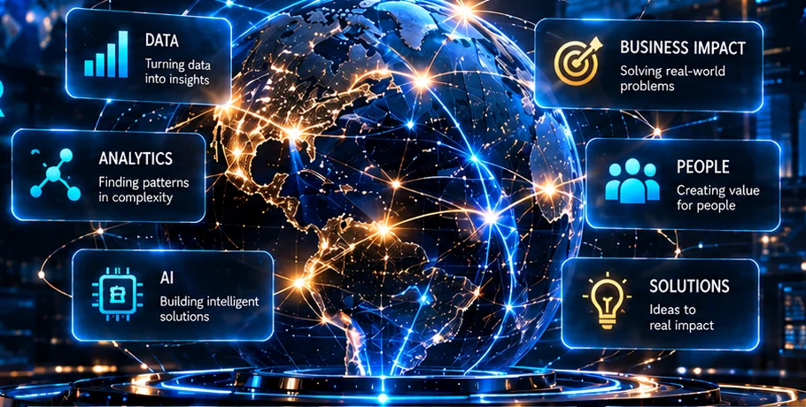
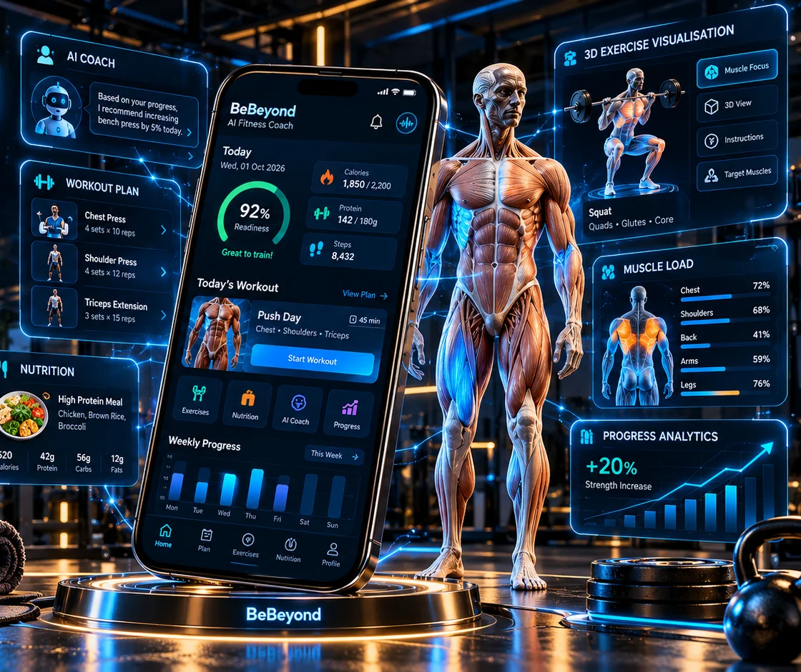
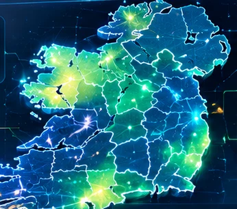
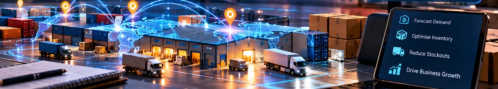
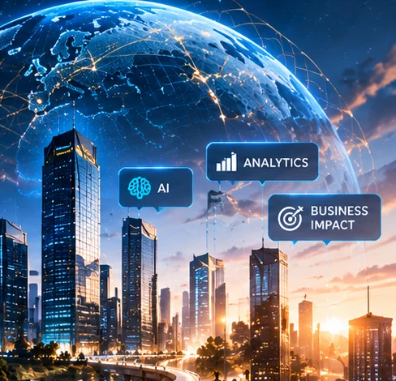

My Mindset
- Analytical Thinker
- Problem Solver
- Continuous Learner
- Team Player
A glowing neural brain above a holographic platform, linked to people, data, analytics, insights, decisions and business impact.
Business Analysis · Data · Analytics · AI · Intelligent Products
Hello, I'm
Turning data, AI and technology into intelligent business decisions and practical solutions.
Open to Business Analyst, AI Business Analyst and Data Analyst roles in Ireland
02. About me
I enjoy turning complex and real-world problems into practical, data-driven solutions. With a strong foundation in engineering and an MSc in Business Analytics, I combine analytical thinking, technology and business understanding to create meaningful impact in people's lives.
Outside the classroom: weekend volunteering with Save the Children in Pune, including teaching mathematics to children; Head Boy at higher secondary school; leading the college fashion show; and representing my college at cricket.

A glowing globe linked to data, analytics, AI, business impact, people and solutions.
From data to impact.
03. Projects
Featured project · AI product
AI Fitness Coach
Personalised training, nutrition and 3D exercise visualisation, with AI that explains each recommendation.
Stack: React Native, Expo, TypeScript, FastAPI, PostgreSQL, Three.js

Featured project · Machine learning · Team project
Machine Learning
An explainable model that catches the fraud a standard baseline misses, framed for a fraud operations team rather than a leaderboard.
Public synthetic dataset from Kaggle, not real card-network data. Synthetic data is cleaner than real transactions, so the useful part is the explainable behavioural features, not the headline score.
Python · XGBoost · GridSearchCV · SHAP · scikit-learn · Gradio
Featured project · Client consultancy · Team project
Data Analysis & Visualisation
A real client engagement for Age Friendly Ireland: how ageing will change who struggles with stairs at home, and what national policy should do about it.

Featured project · Forecasting
Business Analytics
Forecasting built around a planning decision: too much stock ties up capital, too little loses sales.

04. Skills
Five capabilities that work as one system: understand the problem, analyse the data, model it, build the product, and keep learning.
01
Frame the problem and agree what success looks like.
02
Get data into a state worth trusting, then answer the question.
03
Models that predict something useful and can explain themselves.
I don't just know tools. I know how to use them to solve business problems.
A glowing brain on a holographic pedestal reading Data, Insights, Solutions, Impact.
04
Turn the insight into something people can actually use.
05
From the electronics and R&D side of the journey.
06
A person with a backpack walking along a lit waterfront path towards a city of glass towers at dusk.
05. Experience
Celbridge, Ireland · Feb 2026 – Present
Kildare, Ireland · Nov 2024 – Feb 2026
India · Oct 2022 – Dec 2023
India · Jul 2021 – Oct 2022
Independent project · Delhi · Feb 2018 – Aug 2019
06. Education & journey
A journey of continuous learning, real-world experience and meaningful growth, combining engineering, data and business analytics to create a smarter, more impactful future.
Every experience adds a new skill, a new perspective and a stronger version of me.

Savitribai Phule Pune UniversityPune, India
Bajaj ElectricalsIndia
Bajaj ElectricalsIndia
Maynooth UniversityKildare, Ireland
SuperValuCelbridge, Ireland
07. What comes next
![Let's build something meaningful: turning data, AI and technology into real solutions for a better, healthier and more inclusive world. A glowing globe on a holographic platform sits between a darker industrial city and a riverside town at sunrise, linked to business intelligence, supply chain optimisation, fraud detection, data visualisation, an age-friendly society, AI fitness coaching, sustainable growth and real-world impact. Themes: smarter businesses, inclusive communities, healthier lives, safer digital ecosystems; values: data-driven impact, people first, sustainable growth, AI for good.](assets/img/meaningful-core.webp)
Reducing waste, predicting demand, optimising supply chains.
Data-driven insights for an age-friendly, healthier society.
Personalised fitness, nutrition and AI coaching.
Detecting fraud and building trust online.
I have built across systems, business, data and AI. Now I want to use that combination to build something meaningful.
Open to opportunities
Business Analytics · Data · AI · Intelligent Products
Business Analyst, AI Business Analyst and Data Analyst roles in Ireland.
Let's Connect